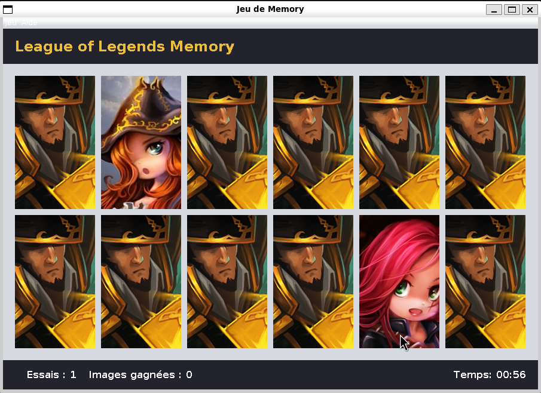
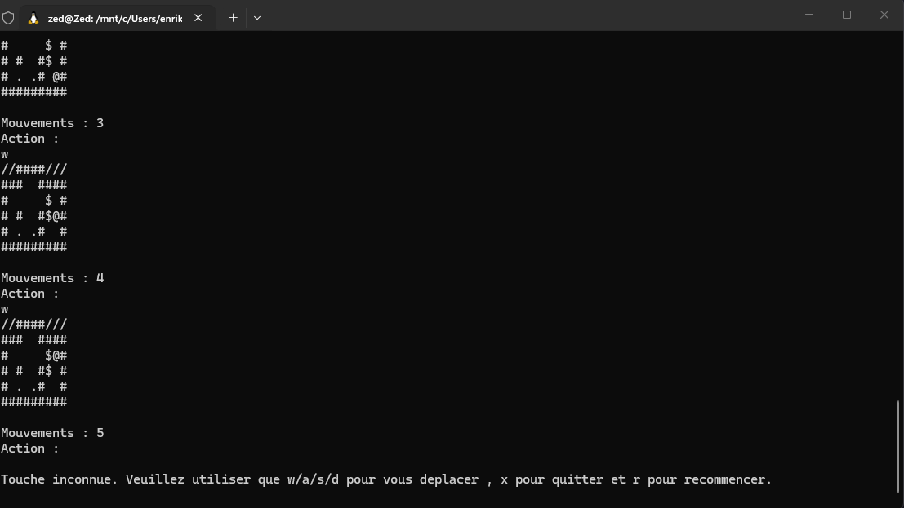

Hey, I'm Enrik.
I'm a third-year computer science student at Université d'Artois, looking for an internship where I can build things that actually work and learn from people who do it every day.
I like code that stays readable and projects that stay organized. I also spent several years in retail and delivery, so deadlines, customers and training new people aren't exactly new territory.
When I'm not coding, I'm probably at the pool.
Projects
Memory Game
A matching game using League of Legends visuals, built in Java with Swing. It follows the MVC pattern, tracks attempts and time, handles card clicks and menu actions (new game, restart, quit, about), and runs from an executable .jar file.

Sokoban
The classic box-pushing game, played directly in the terminal: w, a, s and d to move, x to quit, r to restart. I built the engine in Java, including the levels, movement and collision detection.

Shortest path
A university SAE report in Python, written in LaTeX. I compared Dijkstra (binary heap and Fibonacci heap) with Bellman-Ford using real Ilévia bus data from the Lille area. In practice, the simpler binary heap came out ahead most of the time, while Bellman-Ford was much slower. Sometimes the fancy theory doesn't beat the simple solution.
Skills
- Languages: Java (OOP, inheritance, collections), Python, C, JavaScript
- Web: HTML, CSS, React
- Databases: PostgreSQL (conceptual model, logical model, SQL, joins)
- Systems: UNIX and Shell (files, processes), Excel and LibreOffice Calc
Experience
Versatile team member, Carrefour City, Faches-Thumesnil
- Checkout, restocking and invoice checks
- Parcel pickup point: receiving and inventorying parcels, checking use-by and best-before dates
- Training new hires and managing stock orders
- Bakery: preparation, baking and shelf stocking
Delivery rider, Just Eat France
- Independent deliveries, route planning and keeping to deadlines
- Team captain from March 2022: onboarding new recruits and being their first point of contact in the field
- Ran the in-house workshop for bike repairs and maintenance
Education
Bachelor's degree in Computer Science, Université d'Artois, Lens
- UNIX: shell scripting, file and process management
- Object-oriented programming in Java: class hierarchies, inheritance, abstract classes, typed collections
- Databases with PostgreSQL: ER modeling, logical schema, SQL
- Web programming: HTML, CSS, JavaScript, React
- Algorithms and data structures in Python and C
CLES English B2 certification, Université d'Artois, February 2025.
Outside the code
I swim. Long sets teach you to pace yourself, breathe when you need to and keep going when the wall still feels far away. I bring the same habits to projects, and I try not to sprint the first 50.
Languages
- English: C1
- Italian: B2 comprehension, B1 writing, B2 speaking
- Spanish: B2 comprehension, A2 writing, B1 speaking
- Driving licence: B
Contact
I'm based near Lille, France. You can reach me at epashaj19@gmail.com or find me on LinkedIn.